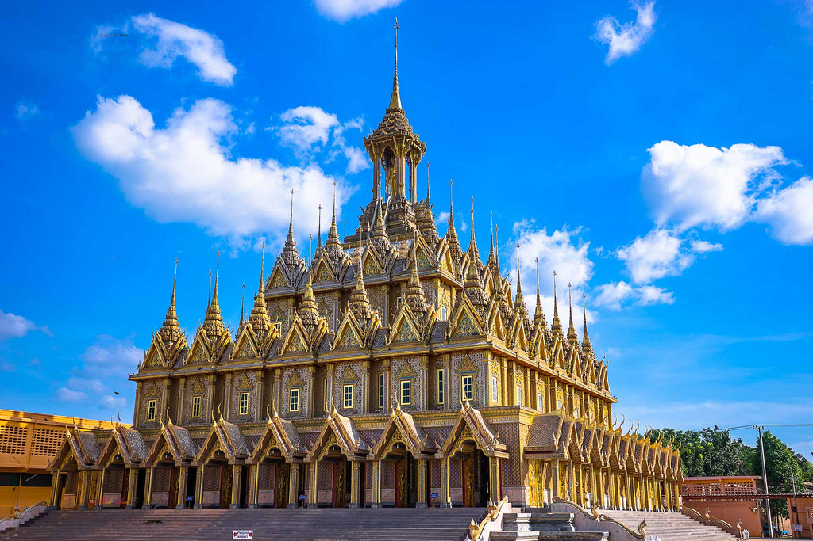
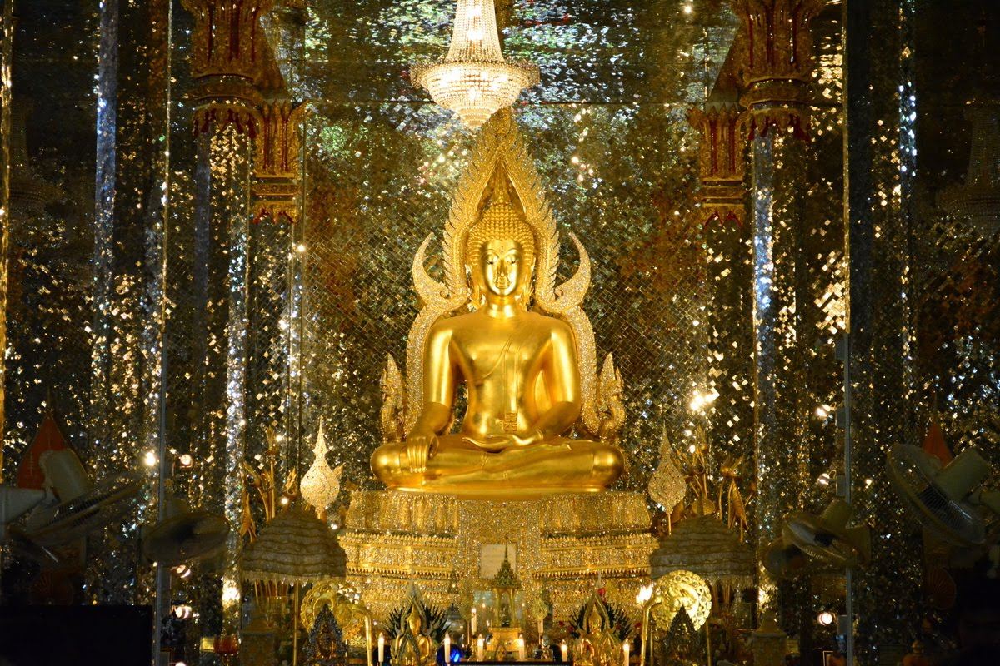
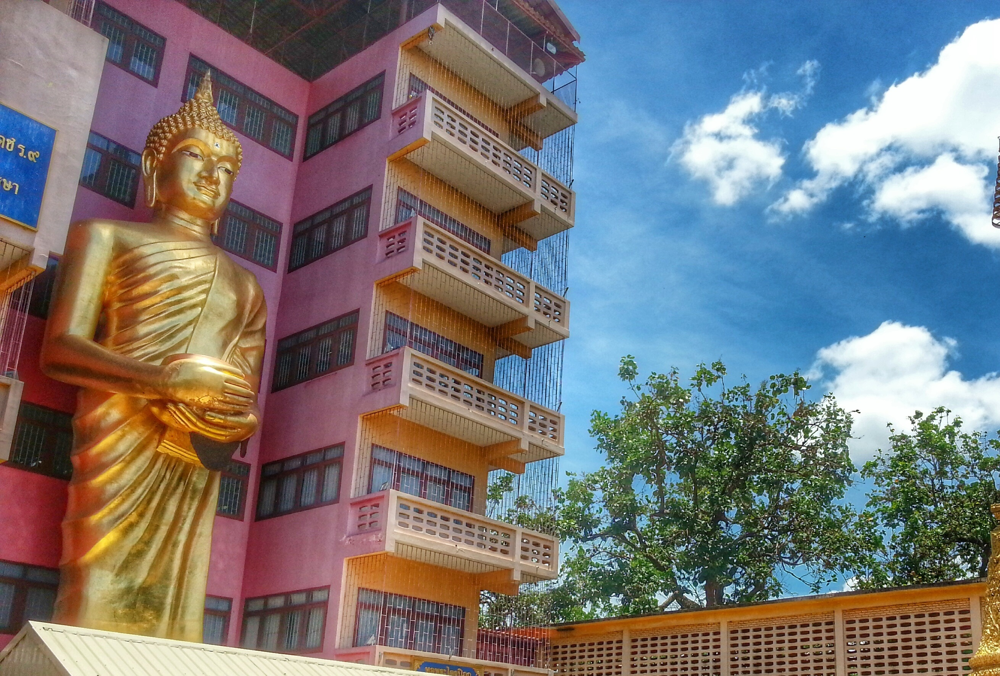
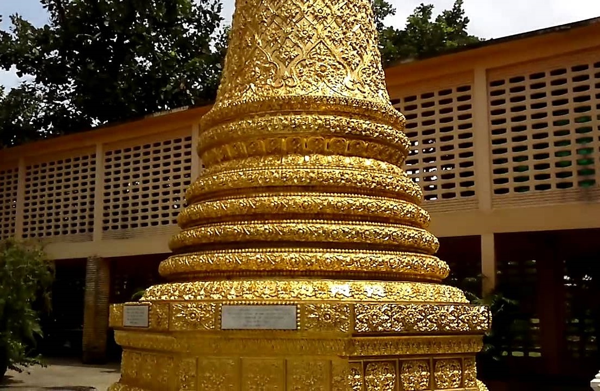

วัดท่าซุง วัดที่มีชื่อเสียงและงดงามของเมืองอุทัยธานี วัดท่าซุง จริงแล้วเป็นวัดเก่าแก่ ที่สร้างตั้งแต่สมัยโดย หลวงพ่อใหญ่องค์แรก เป็นผู้สร้างวัดแต่วัดเริ่ม พัฒนาและเป็นที่รู้จักเมื่อพระราชมหาวีระ ถาวาโร (หลวงพ่อฤาษีลิงดำ) พระเถระที่มีชื่อเสียง ได้สร้างอาคารต่าง ๆ มากมาย เช่น พระอุโบสถใหม่ภายใน ประดับและตกแต่งอย่างวิจิตร บานหน้าต่างและประตูด้านในเขียนภาพเทวดา โดยจิตรกรฝีมือดี พระบาทสมเด็จพระเจ้าอยู่หัว เสด็จพระราชดำเนินมา ตัดลูกนิมิตพระอุโบสถแห่งนี้ บริเวณโดยรอบสร้างกำแพงแก้ว และมีรูปหล่อหลวงพ่อปาน และหลวงพ่อใหญ่ขนาด 3 เท่า อยู่มุมกำแพงด้านหน้ามณฑป และ พระวิหารแก้วที่ประดิษฐาน พระพุทธชินราชจำลอง และร่างของหลวงพ่อฤาษีลิงดำที่ไม่เน่าเปื่อย
แนะนำสถานที่
วิหารแก้ว 100 เมตร
เป็นวิหารสำคัญที่หลวงพ่อฤๅษีลิงดำสร้างไว้ก่อนมรณะภาพรวมทั้งยังเป็นที่รักษาสังขารร่างของหลวงพ่อที่ไม่เน่าเปื่อยในโลงแก้ว ภายในสร้างด้วยโมเสก สีขาว ใสดูเหมือนแก้ววาววับ นอกจากนี้ยังมีพระพุทธรูปจำลองพระพุทธชินราชซึ่งเป็นพระประทานในวิหาร อีกด้วย วิหารแก้วจะเปิดให้ชมเป็นช่วงเวลา คือ ช่วงเช้า ตั้งแต่ 9.00-11.45 น .และช่วงบ่าย 14.00-16.00 น.

ปราสาททองคำ
ตกแต่งด้วยทองคำตระกาลตา สร้างด้วยฝีมือที่ประณีตงดงาม ปราสาททองคำ (กาญจนาภิเษก)ที่มาของคำว่า ปราสาททองคำ (กาญจนาภิเษก) สร้างเพื่อ ถวายเป็นพระราชกุศลแด่พระบาทสมเด็จพระเจ้าอยู่หัว ในวาระที่ ทรงเสวยราชย์เป็นปีที่ 50 และทาง สำนักพระราชวังได้ให้ชื่อปราสาททองคำใหม่ว่า "ปราสาททองกาญจนาภิเษก" ปราสาททองคำ ก่อสร้างด้วยการก่ออิฐฉาบปูน ประดับลวดลายไทยปิดทองคำเปลวติดกระจกใช้เป็นสถานที่ประดิษฐาน พระพุทธรูปที่ญาติโยมถวายรอบนอกปราสาท ใช้ทองคำเปลวปิดรอบปราสาทภายในปราสาทเป็นที่ประดิษฐานสิ่งของสำคัญต่างๆ

นอกจากนี้ภายในวัดท่าซุงยังมีจุดแวะชมที่น่าสนใจหลายแห่ง เช่น มณฑปพระปัจเจกพระพุทธเจ้า พระศรีอาริเมตตรัย วิหารสมเด็จองค์ปฐม หอพระไตรปิฏก
หลวงพ่อเงินไหลมาเทมาเจดีย์พุดตาน มณฑปและวิหารอยู่ หลายแห่งแต่ละแห่งมักจะ ติดวัสดุกระจกและล้อมรอบด้วยแก้วใส ส่วนยอดจะสร้างในลักษณะเดียวกัน
- 
- 
- 